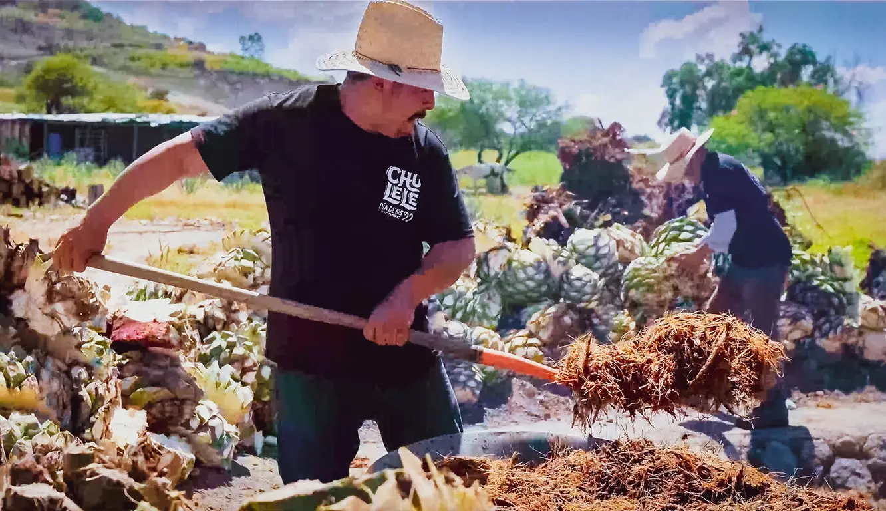

Añejo,
Día de los Muertos 2022
Espadín mezcal, 100% agave, distilled in Santiago Matatlán, Oaxaca, during the 2022 Día de los Muertos. Aged in California oak since December 2022. Held in reserve.
A premium luxury spirit from a premium luxury brand.
$249
Still aging
From one harvest

| 25 Oct 2022 | Harvest, fields of Benito Ruiz and son Francisco. About 150 espadín plants, cut by hand. |
| 28–31 Oct | Pit oven, volcanic stone, four days of cooking. |
| 1 Nov | Tahona milling by Israel and Isabella the horse. |
| 2–9 Nov | Wild fermentation, seven days. |
| 9 & 23 Nov | Two distillations in copper, clay-sealed, wood-fired. |
Conditions at production
| Harvest · 25 Oct | High 84°F · Low 54°F · humidity 26–88% |
| Oven opened · 31 Oct | High 79°F · Low 46°F |
| Fermentation · 2–7 Nov | Highs 75–84°F · Nights 48–57°F |
| 1st distillation · 9 Nov | High 73°F · Low 61°F |
| 2nd distillation · 23 Nov | High 79°F · Low 50°F · above 53% ABV off the still |
Cool nights stretched fermentation to seven days, a little longer than usual.
Tomás Mendéz Hernandez
Maestro Mezcalero of this batch. Santiago Matatlán counts 10,175 residents (2020 census). More than 8,000 speak an indigenous language, and, by Chulele’s account, over 80% of all mezcal comes from this region.
Laid in California oak
In December 2022, part of the batch was set apart and laid into California oak in Santiago Matatlán. It has not left the barrel since. Most mezcal is bottled young. This one is waiting five years.
Expected notes: oak, vanilla, dried fruit, a whisper of smoke.
The documentary

Be there when
the cask opens
The añejo will release once, in a single window, by invitation. Leave your name to be among the first to know.
$249